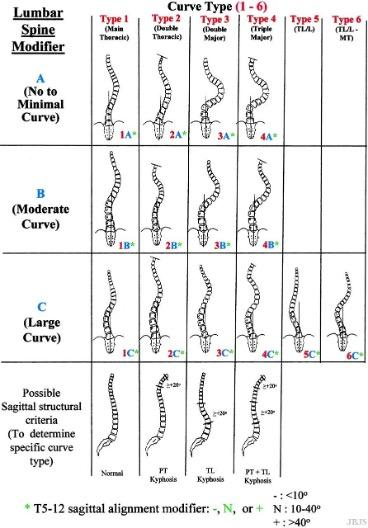
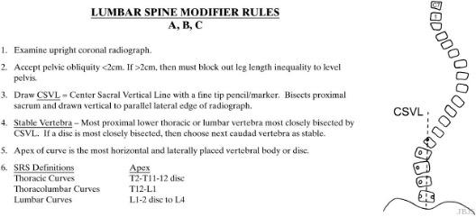
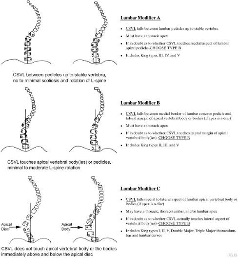
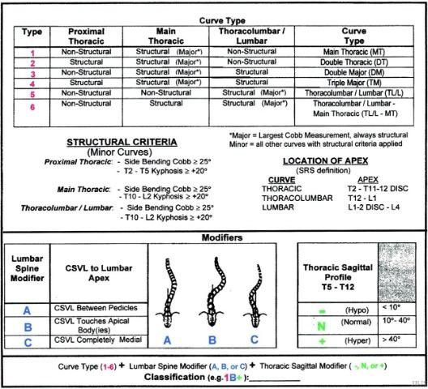

Figures adapted from: Lenke LG, Betz RR, Harms J, Bridwell KH, Clements DH, Lowe TG, Blanke K. Adolescent idiopathic scoliosis: a new classification to determine extent of spinal arthrodesis. J Bone Joint Surg Am. 2001 Aug;83(8):1169-81.
1) Description of Measurement
The Lenke Classification System is the contemporary standard for classifying adolescent idiopathic scoliosis (AIS). It defines scoliosis patterns in three dimensions by integrating: (1) Coronal curve type (1-6) to identify the major curve and structural characteristics of the minor curves, (2) Lumbar spine modifier (A, B, C) based on the relationship of the lumbar curve to the central sacral vertical line (CSVL), and (3) Thoracic sagittal modifier (-, N, +) based on its impact on the curvature from T5-T12.
This system distinguishes structural vs non-structural curves, enabling surgeons to determine which curves require inclusion in fusion constructs.
2) Instructions to Measure
Obtain four radiographs of the spine (standing long cassette coronal and sagittal, as well as right and left supine bending)
Structural Criteria:
Curve Types:
Structural proximal thoracic (PT) curves have Cobb angles of 25° on side-bending xrays and/or kyphosis between T2-T5 of ≥ 20°. Structural main thoracic (MT) curves have Cobb angles of 25° on side-bending xrays and/or kyphosis between T10-L2 of ≥ 20°. Structural thoracolumbar/lumbar (TL) curves have Cobb angles of 25° on side-bending xrays and/or kyphosis between T10-L2 of ≥ 20°. *Either the main thoracic or the thoracolumbar/lumbar curve can be the major curve.
3) Normal vs. Pathologic Ranges
4) Important References
Lenke L, Betz R, Harms J, et al. Adolescent idiopathic scoliosis: a new classification to determine extent of spinal arthrodesis. J Bone Joint Surg Am 2001; 83A: 1169–81.
Richards BS, Sucato DJ, Konigsberg DE, Ouellet JA. Comparison of reliability between the Lenke and King classification systems for adolescent idiopathic scoliosis using radiographs that were not premeasured. Spine (Phila Pa 1976). 2003 Jun 1;28(11):1148-56; discussion 1156-7. doi: 10.1097/01.BRS.0000067265.52473.C3.
Puno RM, An KC, Puno RL, Jacob A, Chung SS. Treatment recommendations for idiopathic scoliosis: an assessment of the Lenke classification. Spine (Phila Pa 1976). 2003 Sep 15;28(18):2102-14; discussion 2114-5. doi: 10.1097/01.BRS.0000088480.08179.35.
Lenke LG, Edwards CC 2nd, Bridwell KH. The Lenke classification of adolescent idiopathic scoliosis: how it organizes curve patterns as a template to perform selective fusions of the spine. Spine (Phila Pa 1976). 2003 Oct 15;28(20):S199-207. doi: 10.1097/01.BRS.0000092216.16155.33.
5) Other info....
The Lenke system determines fusion strategy:
It improved outcomes over King–Moe by: